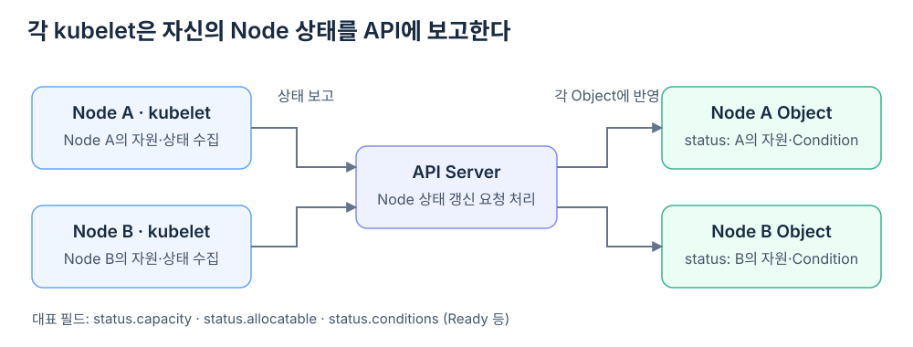
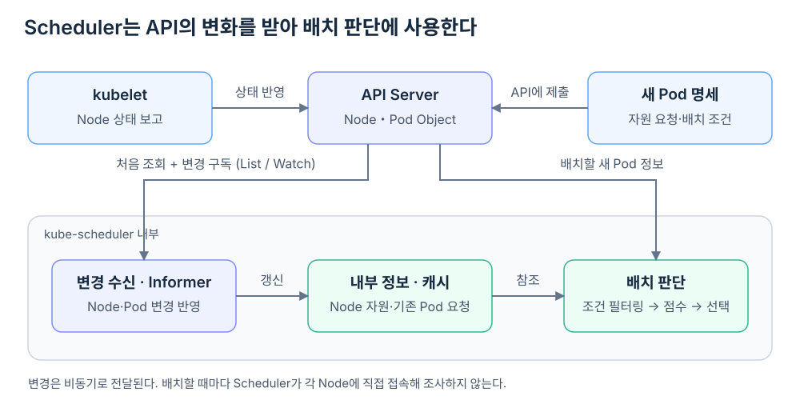

Scheduler는 Control Plane에서 실행되지만, Pod를 배치하려면 각 Node가 제공하는 자원과 이미 배정된 Workload를 알아야 한다. 그렇다면 배치할 때마다 모든 Node에 접속해 CPU와 Memory 상태를 조사하는 것일까?
이 정보는 Kubernetes API를 통해 모인다. 각 Node의 kubelet이 자신의 상태를 API Server에 보고하고, Scheduler는 Node와 Pod Object의 변화를 받아 내부에 유지한다. Node를 선택하는 순간에는 이 정보를 함께 사용한다.
Node의 상태는 kubelet이 보고한다
kubelet은 자신이 실행되는 Node의 정보를 수집해 Kubernetes API에 게시한다. Node Object의 status에는 자원의 Capacity와 Allocatable, Ready 같은 Condition 등이 들어간다. GPU를 Device Plugin으로 등록한 환경에서는 GPU 확장 자원도 이 경로로 보고된다.

Capacity는 Node의 전체 자원량이고, Allocatable은 시스템용 예약 등을 고려해 Pod에 제공할 수 있는 총량이다. Allocatable은 새 Pod가 배치될 때마다 줄어드는 잔여량이 아니다.
Node와 관련된 모든 정보가 kubelet 혼자 만든 정보인 것은 아니다. Label이나 Taint, 배치 금지 설정 등은 관리자나 다른 Controller도 변경할 수 있다. Scheduler는 API에 반영된 이런 조건도 함께 본다.
Scheduler는 변경 사항을 구독한다
Scheduler는 Node에 직접 접속하는 대신 API Server를 통해 Node와 Pod 정보를 받아 유지한다. 이를 이해하는 기본 모델은 처음 상태를 조회하는 List와 이후 변경을 구독하는 Watch다. Kubernetes의 Watch는 Object의 추가·변경·삭제를 스트림으로 전달한다.
Scheduler 내부의 Informer와 스케줄링 캐시는 이런 변경을 반영해 배치 판단에 필요한 정보를 유지한다. 배치할 때마다 모든 Node를 새로 조사하지 않아도 되는 이유다.

상태 전달은 비동기이므로 Scheduler의 정보가 물리적인 현재 상태와 매 순간 완전히 같다는 뜻은 아니다. Kubernetes는 변경을 계속 전달하고 각 구성요소가 다시 조정하는 방식으로 동작한다.
남은 자원은 Node 정보와 Pod 요청을 함께 봐야 한다
Node가 CPU를 얼마나 제공하는지만 알아서는 새 Pod가 들어갈 수 있는지 판단할 수 없다. 이미 배정된 Pod들이 얼마를 요청했는지도 알아야 한다. 이 정보는 Pod Object의 자원 요청과 Node 배정 정보에서 얻는다.
아래는 CPU만 고려한 설명용 예시다.
| 판단에 필요한 정보 | 값 | 정보의 출처 |
|---|---|---|
| Node A의 Allocatable CPU | 8 | Node Object의 status.allocatable |
| Node A에 배정된 기존 Pod들의 CPU 요청 합계 | 6 | Pod 명세의 requests와 Node 배정 정보 |
| 새 Pod의 CPU 요청 | 2 | 새 Pod 명세의 requests |
기존 요청 6 + 새 요청 2 ≤ Allocatable 8
→ CPU 자원 조건을 만족
CPU 조건을 만족했다고 최종 배치가 확정되는 것은 아니다. Memory, GPU, Node 선택 조건, Taint, Volume 등의 조건도 만족해야 한다. Scheduler는 가능한 후보를 걸러낸 뒤 점수를 매겨 Node를 선택한다.
이때 이미 Node에 배정됐지만 아직 실행 준비 중인 Pod의 요청도 고려해야 한다. Scheduler는 자신이 방금 배치하기로 결정한 Pod도 캐시에 우선 반영하는 방식으로, API 변경이 다시 관찰되기 전 같은 자원을 중복 계산하는 문제를 줄인다.
실제 사용률과 요청량은 다른 정보다
기본 Scheduler의 자원 적합성 판단은 Pod가 선언한 요청량을 기준으로 한다. 예를 들어 Node의 CPU 사용률이 지금 낮더라도, 기존 Pod의 요청 합계가 Allocatable에 가까우면 새 Pod를 배치할 여유가 없다고 판단할 수 있다.
따라서 kubectl top node에 표시되는 순간 사용량과 Scheduler가 계산하는 예약 여유는 다르다. Prometheus나 Metrics Server가 수집하는 사용률을 기본 Scheduler가 그대로 Node 점수로 삼는다고 이해하면 안 된다.
GPU도 같은 관점으로 이해할 수 있다. nvidia.com/gpu가 2개 게시된 Node에서 기존 Pod가 두 개를 모두 요청했다면, GPU 사용률이 낮더라도 같은 자원을 추가 요청한 Pod를 배치할 수 없을 수 있다. 여기서 보는 것은 장치 사용률이 아니라 게시된 자원과 요청량이다.
배치 결과도 API Server를 통해 전달된다
Scheduler가 Node를 선택하면 Binding을 통해 배정 결과가 API에 반영되고, Pod의 spec.nodeName에 해당 Node가 연결된다. 그 Node의 kubelet이 배정된 Pod를 관찰하고 실행을 조정한다.
kubelet → Node의 자원·상태 보고
↓
API Server ← Pod 명세·자원 요청
↓
Scheduler → Node 정보와 기존 Pod 요청을 함께 판단
↓
API에 Node 배정 반영
↓
선택된 Node의 kubelet → Runtime을 통해 Pod 실행 조정
Scheduler가 Node 상태를 안다는 것은 각 서버를 직접 검사한다는 뜻이 아니다. kubelet과 다른 구성요소가 API에 기록한 상태, 그리고 Pod들이 선언한 요구 조건을 함께 읽어 배치 결정을 내린다는 뜻이다.